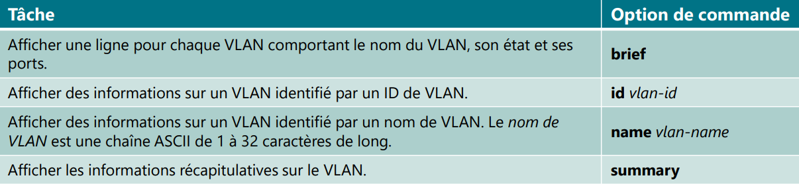
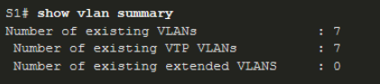
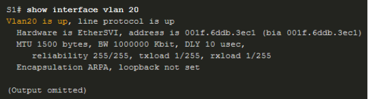

Commande ios
Commande de base
!--- commentaire # commentaire cisco
router>? # aide
router> # utilisateur
router> enable # accès root
router# configuration # acces configuration globale
router>exit ou end # retour en arrière
router(config)#ip domain-name CCNA.com # changé nom de domaine (sensible à la casse pour la notation dans PT)
router(config)# no ip domain-lookup # désactiver la recherche dns
show run | include default-gateway # afficher gateway
!--- Rename le nom du switch ou server
router(config)#hostname (hostname) # assigner un hostname
router(config)#no hostname (hostname) # supprimer le hostname
!--- Mot de passe et ssh
router(config)#username any_user secret any_password # creer user et mot de passe pour ssh
router(config)#service password-encryption # Crypter tous les mots de passe en clair
router(config)#security password min-length 10 # Définissez la longueur minimale du mot de passe sur 10
Configurer le mot de passe de console ainsi que celui du mode d'exécution privilégié.
router(config)# line console 0
router(config-line)# password "cisco" # Attribuez "cisco" comme mot de passe de console, puis
router(config-line)# login # activez la connexion
router(config-line)# exit
router(config)# enable secret "class" # Utilisez "class" comme mot de passe pour le mode d'exécution privilégié chiffré.
Commande show
router(config)#show vlan [brief | id vlan-id | name vlan-name | summary]
router(config)#show running configuration # affiche la config du routeur
router(config)#show arp # protocole résolution d'adresse
Protocol Address Age (min) Hardware Addr Type Interface
Internet 209.165.201.1 - 0060.70B4.A601 ARPA GigabitEthernet0/0
router(config)#show flash # mem flash
router(config)#show ip route # route
router(config)#show interface # interface
router(config)#show version # version
router(config)#show ? # aide

Configurer une bannière MOTD (message of the day, ou message du jour)
Dans cette étape, vous allez configurer une bannière MOTD pour afficher un avertissement d'accès non autorisé. Voici un exemple de texte : - Accès autorisé uniquement.
Utilisez la commande banner motd avec le message exemple. Vous pouvez choisir un autre message.
router(config)# banner motd "Accès autorisé uniquement."
Enregistrer le fichier de config
router(config)#exit # quitter le mode root
router>copy running-config startup-config
router>wr
Enregistrer sur la mémoire flash
Sachez qu'en guise de procédure de sauvegarde supplémentaire, vous pouvez enregistrer votre fichier de configuration initiale dans la mémoire Flash. Par défaut, le routeur continue à charger la configuration initiale à partir de la mémoire NVRAM, mais si cette mémoire est endommagée, vous pouvez restaurer la configuration initiale en la copiant à partir de la mémoire Flash.
router(config)#copy startup-config flash
router(config)#copy startup-config flash
Configuration de port et ip ( Commande switchport )
Configurez un port sécurisé
Accédez à la ligne de commande pour server et activez la sécurité des ports sur les ports Fast Ethernet 0/1 et 0/2.
server(config)# interface range fa0/1 - 2
server(config-if-range)# switchport port-security
Définissez le maximum afin qu'un seul appareil puisse accéder aux ports Fast Ethernet 0/1 et 0/2.
server(config-if-range)# switchport port-security maximum 1
Sécurisez les ports afin que l'adresse MAC d'un périphérique soit dynamiquement apprise et ajoutée au réseau en cours d'exécution. configuration.
server(config-if-range)# switchport port-security mac-address sticky
Définissez la violation de sorte que les ports Fast Ethernet 0/1 et 0/2 ne soient pas désactivés lorsqu'une violation se produit, mais une notification de la violation de sécurité est générée et les paquets provenant de la source inconnue sont supprimés.
server(config-if-range)# switchport port-security violation restrict
Désactivez tous les ports inutilisés restants. Astuce : utilisez le mot-clé range pour appliquer cette configuration à tous les ports simultanément.
server(config-if-range)# interface range fa0/3 - 24 , gi0/1 - 2
server(config-if-range)# shutdown
mode de port sécurisé
(config-if)#switchport port-security violation {protect | restrict | shutdown}
- Mode protect : dès que la “violation” est constatée, le port arrête de transférer le trafic des adresses non autorisées sans envoyer de message de log.
- Mode restrict : dès que la “violation” est constatée, le port arrête de transférer le trafic des adresses non autorisées et transmet un message de log.
- Mode shutdown : dès que la “violation” est constatée, le port passe en état err-disabled (shutdown) et un message de log est envoyé.
Désactiver tous les ports de commutateur inutilisés
non utilisé f0/2 jusqua f0/24 et g0/2
SW1(config)# interface range F0/2-24, G0/2
SW1(config-if-range)# shutdown
Configurer l'ip et adress mask gateway
router(config)#interface vlan 1
router(config)# ip address 192.168.1.253 255.255.255.0
router(config)# no shutdown #enable interface
router(config)# exit
router# show ip interface brief # vérifier changement effectuer
router(config)#ip default-gateway address # configurer gateway par default
router(config)#no default-gateway address
Vlan trunk ssh
Créer et nommer des vlans
router(config)#vlan 10
router(config-vlan)# name (namevlan10)
router(config)#vlan 15
router(config-vlan)# name (namevlan15)
 
Assignez des vlans a un port actif
router(config)# interface f0/11
router(config-if)# switchport mode access
router(config-if)# switchport access vlan 10
router(config-if)# switchport access vlan 15
Assignez le voice vlan a un port actif
router(config)# interface f0/11
router(config-if)# mls qos trust cos
router(config-if)# switchport voice vlan 150 # vlan 150
Configure trunks
Un trunk est une liaison point à point entre deux périphériques réseau.
Fonctions du trunk : • Autoriser plusieurs VLAN sur un port • Étendre le VLAN sur l'ensemble du réseau
!--- Configurer G0/1 et G0/2 interfaces sur Server pour trunk.
router(config)# interface range g0/1 - 2
router(config-if)# switchport mode trunk
!--- Configure VLAN 99 as the native VLAN for G0/1 and G0/2 interfaces on S1.
router(config-if)# switchport trunk native vlan 99
SSH
Désactivez la recherche DNS.
server(config)# no ip domain-lookup
Choisir un nom de domaine
router(config)# ip domain-name CCNA.com
creer un user de son choix avec un mot de passe sécurisé
router(config)# username any_user secret any_password
Generer 1024-bit RSA keys.
router(config)# crypto key generate rsa
How many bits in the modulus [512]: 1024
Bloquez pendant trois minutes toute personne qui ne parvient pas à se connecter après quatre tentatives sur une période de deux minutes.
router(config)# login block-for 180 attempts 4 within 120
Configurez toutes les lignes VTY pour l'accès SSH et utilisez les profils d'utilisateurs locaux pour l'authentification.
router(config)# line vty 0 4
router(config-line)# transport input ssh
router(config-line)# login local
Réglez le délai d'attente du mode EXEC sur 6 minutes sur les lignes VTY.
router(config-line)# exec-timeout 6
Et sauvegarder